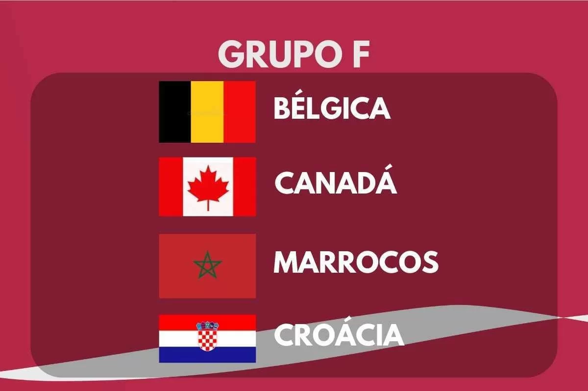

DESCRIÇÃO DO GRUPO
O Grupo F da Copa do Mundo FIFA 2022 terá sua primeira fase de jogos de 23 de novembro a 1 de dezembro de 2022.
O grupo é formado pela Bélgica, Canadá, Marrocos e Croácia.
As duas melhores equipes avançam para as oitavas de final.
|  |
Encontros anteriores em Copas do Mundo |
| Bélgica x Canadá |
Nenhum encontro |
| Marrocos x Croácia |
Nenhum encontro |
| Bélgica x Marrocos |
1994, fase de grupos:
Bélgica 1-0 Marrocos
|
| Croácia x Canadá |
Nenhum encontro |
| Croácia x Bélgica |
Nenhum encontro |
| Canadá x Marrocos |
Nenhum encontro |
EQUIPES
| Equipe |
Inscrição |
Confederação |
Método de Qualificação |
Data de Qualificação |
Aparições em Copas do Mundo |
Última Participação |
Melhor Resultado |
Ranking FIFA (Março/2022) |
| Bélgica |
F1
(Cabeça-de-chave) |
UEFA |
Vencedor do grupo E |
13 de novembro de 2021 |
13 |
2018 |
Terceiro lugar (2018) |
2º |
| Canadá |
F2 |
CONCACAF |
Vencedor da terceira fase |
27 de março de 2022 |
2 |
1986 |
Fase de grupos (1986) |
38º |
| Marrocos |
F3 |
CAF |
Vencedor do grupo I |
29 de março de 2022 |
6 |
2018 |
Oitavas de final (1986) |
24º |
| Croácia |
F4 |
UEFA |
Vencedor do grupo H |
14 de novembro de 2021 |
6 |
2018 |
Vice-campeão (2018) |
16º |
PARTIDAS
Todas as partidas seguem o fuso horário UTC+3 (Horário de Moscow).
Marrocos x Croácia
| Data/Hora |
Local |
| 23 de Novembro às 13:00 |
Estádio Al Bayt, Al Khor |
Bélgica x Canadá
| Data/Hora |
Local |
| 23 de Novembro às 22:00 |
Estádio Ahmed bin Ali, Al Rayyan |
Bélgica x Marrocos
| Data/Hora |
Local |
| 27 de Novembro às 16:00 |
Estádio Al Thumama, Doha |
Canadá x Croácia
| Data/Hora |
Local |
| 27 de Novembro às 19:00 |
Estádio Internacional Khalifa, Doha |
Bélgica x Croácia
| Data/Hora |
Local |
| 01 de Dezembro às 18:00 |
Estádio Ahmed bin Ali, Al Rayyan |
Canadá x Marrocos
| Data/Hora |
Local |
| 01 de Dezembro às 18:00 |
Estádio Al Thumama, Doha |
CLASSIFICAÇÃO
| 1º Colocado |
2º Colocado |
| Enfrenta o 2º Colocado do Grupo E, nas Oitavas de Final |
Enfrenta o 1º Colocado do Grupo E, nas Oitavas de Final |